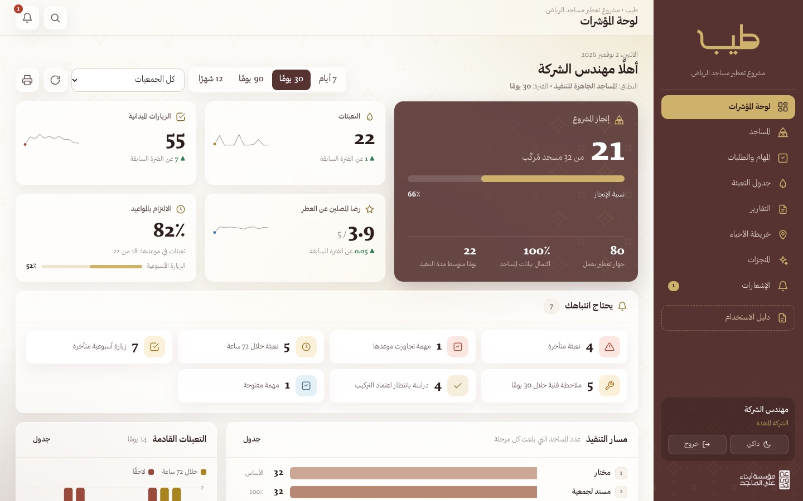
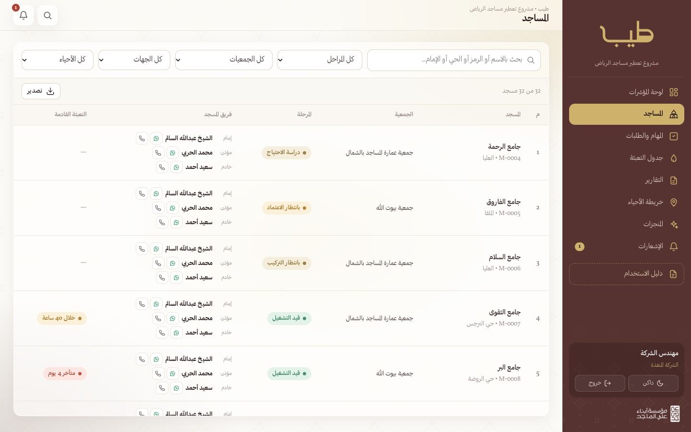
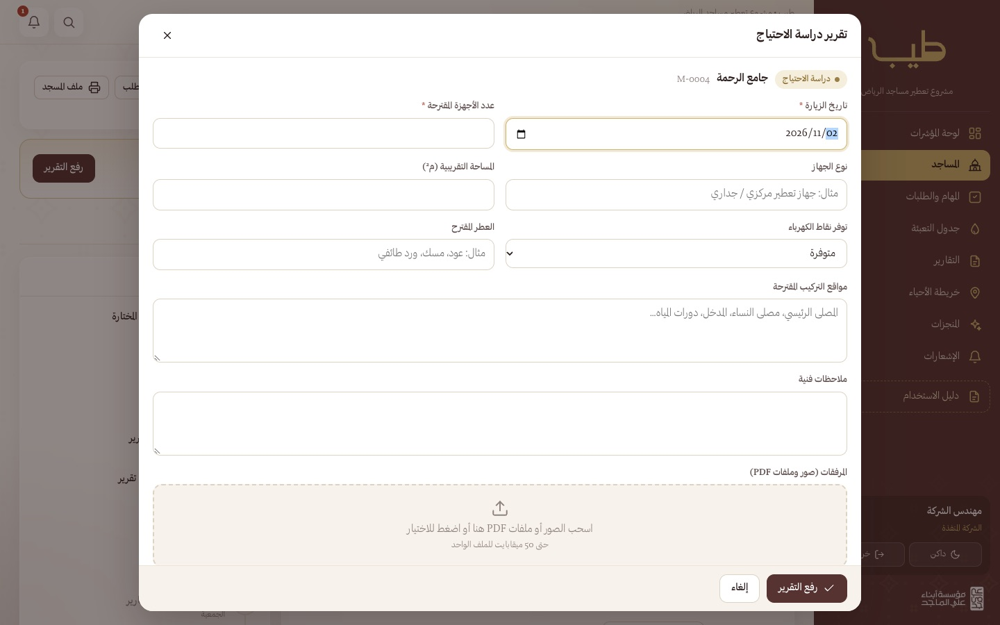
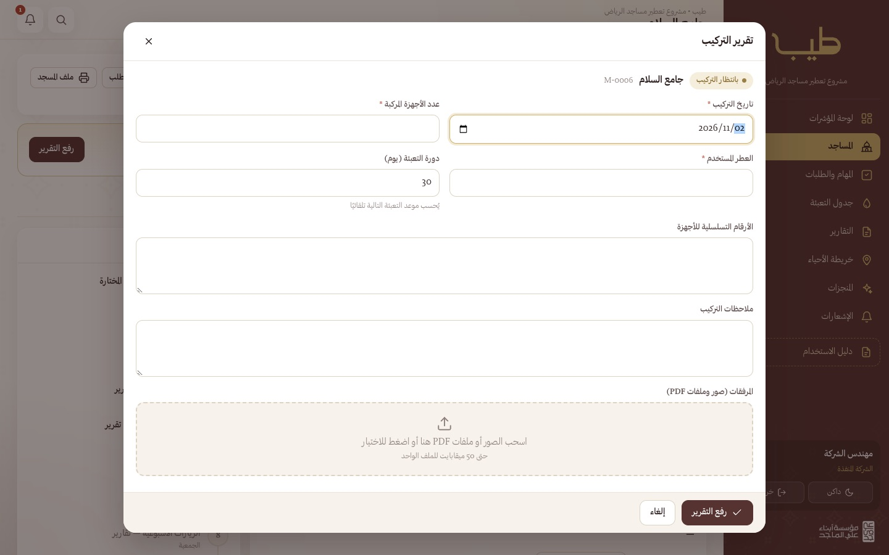
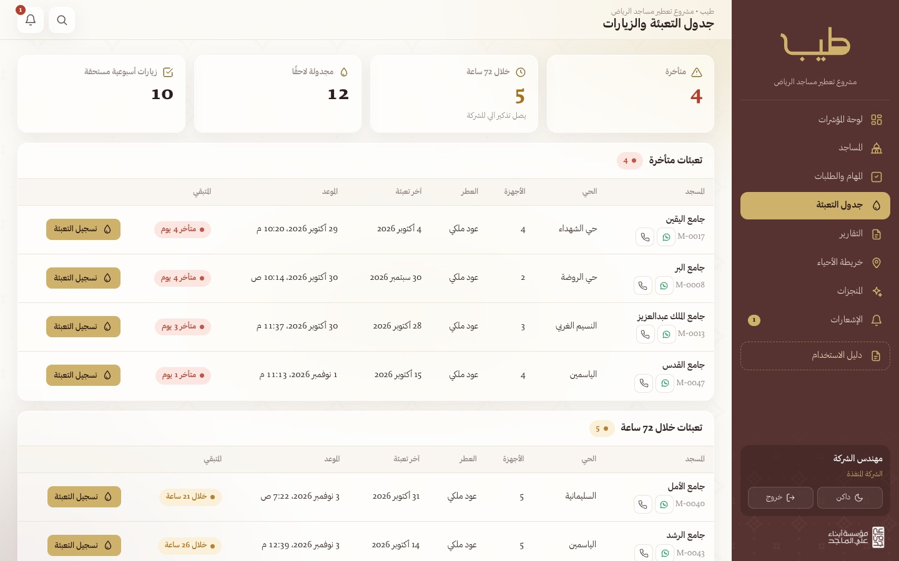
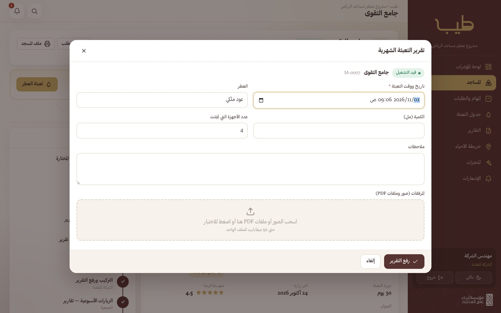
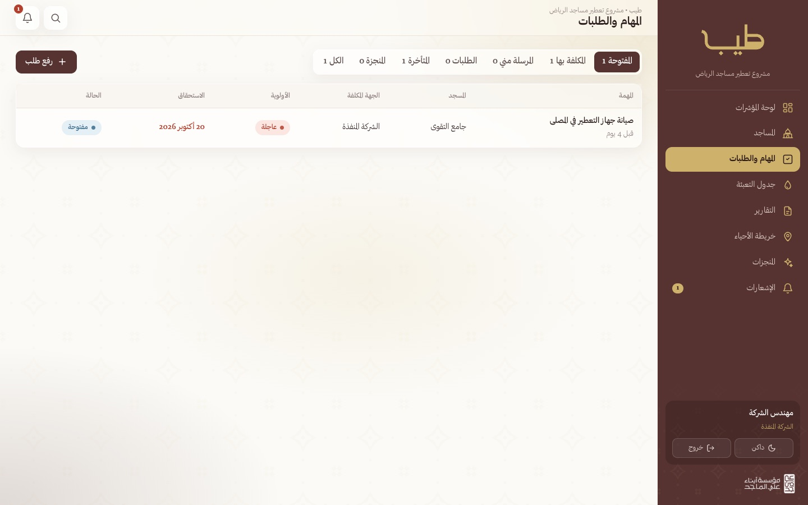
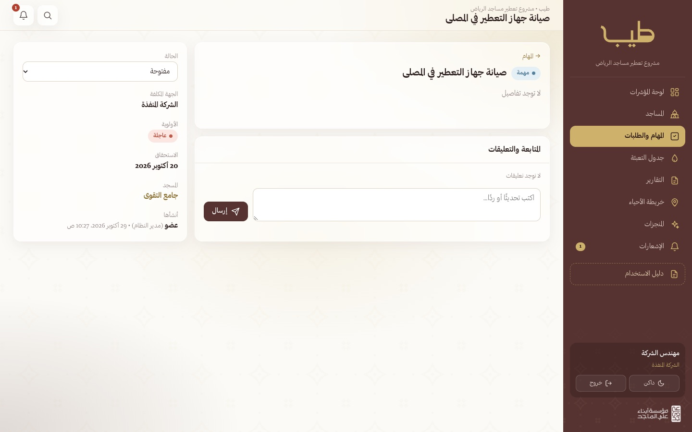

1دورك في المنصة
ترى الشركة المساجد التي وصلت لمرحلة دراسة الاحتياج وما بعدها. الخطوات المظللة من مسؤولية الشركة:
| # | الخطوة | المسؤول |
|---|---|---|
| 1 | إدخال المسجد في القائمة المختارة | مدير النظام |
| 2 | إسناد المسجد لجمعية مشرفة | مدير النظام |
| 3 | استكمال بيانات المسجد (الحي، الإمام، المؤذن، الخادم) | الجمعية |
| 4 | التواصل مع الإمام ورفع تقرير قابلية التطبيق | الجمعية |
| 5 | دراسة احتياج الجامع ورفع التقرير | الشركة المنفذة |
| 6 | اعتماد التركيب | مدير النظام |
| 7 | التركيب ورفع تقرير التركيب | الشركة المنفذة |
| 8 | الزيارات الأسبوعية | الجمعية |
| 9 | قياس رضا المصلين عن العطر | الجمعية |
| 10 | التقرير الشهري لأداء التعطير | الجمعية |
| 11 | التعبئة الشهرية (مع تذكير آلي قبل ٧٢ ساعة) | الشركة المنفذة |
| 12 | المتابعة والتقارير والمؤشرات | الجميع |
2الدخول وتفعيل الحساب
يُنشئ مدير النظام حسابك ويرسل لك رمز تفعيل مع رابط المنصة عبر واتساب أو البريد. تفعّل الحساب مرة واحدة، ثم تدخل بعدها بالبريد وكلمة المرور.
- افتح رابط المنصة: https://tiyb.saom.sa/
- اختر تبويب «تفعيل حساب جديد».
- اكتب بريدك الإلكتروني كما سجّله المدير، ورمز التفعيل المكوّن من ٨ خانات.
- اختر كلمة مرور من ٨ أحرف على الأقل، ثم اضغط «تفعيل الحساب» — تدخل المنصة مباشرة.


3التنقل في المنصة
القائمة الجانبية تعرض الصفحات المتاحة لصلاحيتك فقط. في الأعلى: زر البحث السريع للوصول لأي مسجد بالاسم أو الرمز أو الحي أو اسم الإمام وجواله، وزر الإشعارات وعليه عدد غير المقروء. وفي أسفل القائمة زر التبديل بين الوضع الفاتح والداكن وزر الخروج.
المنصة تعمل على الجوال بنفس الحساب: تظهر القائمة شريطًا سفليًا بأهم الصفحات، وزر «المزيد» يفتح بقية القائمة، والمساجد تظهر بطاقات سهلة اللمس.


4لوحة المؤشرات
تعرض التعبئات المتأخرة والقريبة، والدراسات والتركيبات المطلوبة، والالتزام بمواعيد التعبئة، ورضا المصلين، مع المقارنة بالفترة السابقة.

5المساجد
قائمة المساجد الموجهة للشركة مع مرحلتها وبيانات التواصل مع الإمام والخادم لتنسيق الزيارة.

6الخطوة ٥: دراسة الاحتياج
- بعد أن تؤكد الجمعية قابلية التطبيق يصلك إشعار. نسّق الزيارة مع الإمام (الوقت المناسب مذكور في تقرير الجمعية).
- افتح المسجد واضغط «رفع التقرير».
- املأ: تاريخ الزيارة، عدد الأجهزة المقترحة، نوع الجهاز، المساحة، توفر الكهرباء، العطر المقترح، ومواقع التركيب، وأرفق الصور.
- يصل التقرير لمدير النظام للاعتماد.

7الخطوة ٧: التركيب
- بعد اعتماد المدير يصلك إشعار «معتمد — بانتظار التركيب».
- نفّذ التركيب ثم اضغط «رفع التقرير» في صفحة المسجد.
- املأ: تاريخ التركيب، عدد الأجهزة المركّبة، العطر المستخدم، دورة التعبئة بالأيام، والأرقام التسلسلية، وأرفق صور الأجهزة بعد التركيب.
- يصبح المسجد «قيد التشغيل» ويُحسب موعد التعبئة التالية تلقائيًا.

8الخطوة ١١: التعبئة الشهرية
صفحة جدول التعبئة هي مرجعك اليومي: المتأخرة بالأحمر، والمستحقة خلال ٧٢ ساعة، والمجدولة لاحقًا. ويصلك وللمدير تذكير آلي قبل الموعد بـ٧٢ ساعة، وتنبيه عند التأخر.

- بعد التعبئة اضغط «تسجيل التعبئة» من الجدول، أو «تعبئة العطر» من صفحة المسجد.
- املأ: تاريخ ووقت التعبئة، العطر، الكمية (مل)، وعدد الأجهزة التي عُبّئت، وأرفق صورة.
- يُحدّث موعد التعبئة التالية تلقائيًا حسب دورة المسجد.

9المهام والطلبات
مهام الصيانة أو المتابعة التي يسندها المدير للشركة، مع الموعد والأولوية. افتح المهمة، وأضف التعليقات والصور، وغيّر حالتها عند الإنجاز.


10الإشعارات
تصلك الإشعارات لحظيًا مع تنبيه صوتي خفيف عند كل ما يخصك: إسناد مسجد، تقرير جديد، اعتماد، مهمة، أو تذكير بموعد. اضغط الجرس لعرض آخر الإشعارات، واضغط أي إشعار للانتقال لصفحته مباشرة.